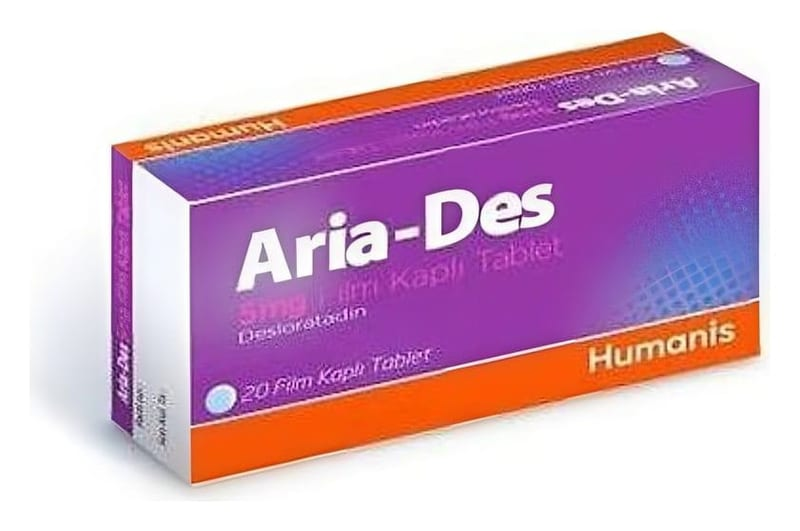

Aria-Des 5 mg Film Kaplı Tablet, 20 Adet

Ne için kullanılır
KT · Bölüm 1ARİA-DES Film Tablet, bir antihistaminik ilaç sınıfından desloratadini içerir. ARİA-DES, uyku hali oluşturmayan antialerjik bir ilaçtır. Alerjik reaksiyonlar ve alerji belirtilerinin kontrol altına alınmasına yardımcı olur. ARİA-DES kutuda, şeffaf PVC/PVDC-Al blisterde, 20 ve 30 tablet içeren ambalajlarda bulunmaktadır. Açık mavi renkli, yuvarlak film kaplı tabletlerdir.
ARİA-DES alerjik nezle ile ilişkili hapşırık, burunda akıntı ve kaşıntı, damakta kaşınma ve gözlerde kaşınma, kızarıklık veya yaşarma gibi belirtileri (örneğin saman nezlesi, ev tozu akarına karşı alerji) giderir.
ARİA-DES Film Kaplı Tablet ayrıca, ürtiker (alerjiden kaynaklanan bir deri hastalığı) ile birlikte görülen kaşıntı ve derideki kabartı ve kızarıklık gibi belirtilerin ortadan kaldırılmasında da endikedir.
Bu ilacı kullanmaya başlamadan önce bu KULLANMA TALİMATINI dikkatlice okuyunuz, çünkü sizin için önemli bilgiler içermektedir. • Bu kullanma talimatını saklayınız. Daha sonra tekrar okumaya ihtiyaç duyabilirsiniz. • Eğer ilave sorularınız olursa, lütfen doktorunuza veya eczacınıza danışınız. • Bu ilaç kişisel olarak sizin için reçete edilmiştir, başkalarına vermeyiniz. • Bu ilacın kullanımı sırasında, doktora veya hastaneye gittiğinizde doktorunuza bu ilacı kullandığınızı söyleyiniz. • Bu talimatta yazılanlara aynen uyunuz. İlaç hakkında size önerilen dozun dışında yüksek veya düşük doz kullanmayınız.
Bu belirtiler tüm gün boyunca giderilmiş olur ve normal günlük aktiviteleriniz ve uykunuza yeniden kavuşmanıza yardımcı olur.
İçeriğinde bulunan laktoz monohidrat inek sütü kaynaklıdır.